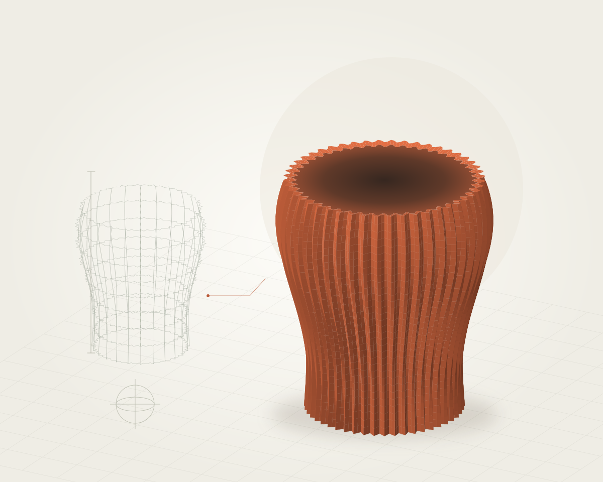

FORMA & ARREDO/01
Vaso Onda
Una superficie ritmata da scanalature, tra geometria e oggetto d’arredo.
Concept dimostrativoSono Silve. Mi appassionano le idee che diventano oggetti: modellazione 3D, prototipi e nuove possibilità da esplorare.

Una superficie ritmata da scanalature, tra geometria e oggetto d’arredo.
Concept dimostrativo
Un concept da scrivania che esplora appoggio, incastri e semplicità d’uso.
Concept dimostrativo
Volumi, aperture e parti da assemblare: uno studio su un piccolo involucro.
Concept dimostrativoUna prima raccolta di concept dimostrativi, in attesa dei progetti reali di Silve.
Mi interessa il dialogo tra il disegno e la materia: esplorare una geometria, ragionare sui dettagli e immaginare come una forma possa diventare qualcosa da usare.
Qualcosa su di meUn’idea, un riferimento, un oggetto da ripensare. Prima della forma c’è una domanda.
Esplorare volumi, proporzioni e incastri, per dare una struttura all’idea.
Preparare il passaggio al prototipo, osservare i dettagli e ripartire da quello che si impara.